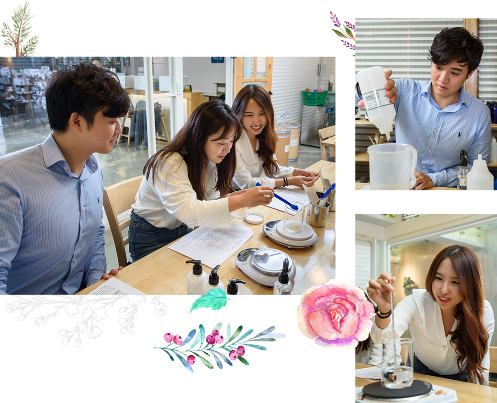

와 제 롤모델이 잡스에요!!! 아이폰 첫 출시되고 나서부터 계속 아이폰 쓰고 있는데 잡스가 너무 그리워요ㅠㅠ 지금은 돈만 벌려고 하는 것 같아서 디자인 발전도 없고ㅠㅠ와 제 롤모델이 잡스에요!!! 아이폰 첫 출시되고 나서부터 계속 아이폰 쓰고 있는데 잡스가 너무 그리워요ㅠㅠ 지금은 돈만 벌려고 하는 것 같아서 디자인 발전도 없고ㅠㅠ와 제 롤모델이 잡스에요!!! 아이폰 첫 출시되고 나서부터 계속 아이폰 쓰고 있는데 잡스가 너무 그리워요ㅠㅠ 지금은 돈만 벌려고 하는 것 같아서 디자인 발전도 없고ㅠㅠ와 제 롤모델이 잡스에요!!! 아이폰 첫 출시되고 나서부터 계속 아이폰 쓰고 있는데 잡스가 너무 그리워요ㅠㅠ 지금은 돈만 벌려고 하는 것 같아서 디자인 발전도 없고ㅠㅠ와 제 롤모델이 잡스에요!!! 아이폰 첫 출시되고 나서부터 계속 아이폰 쓰고 있는데 잡스가 너무 그리워요ㅠㅠ 지금은 돈만 벌려고 하는 것 같아서 디자인 발전도 없고ㅠㅠ
오! 해피데이
환절기 보약 한 첩 같은
천연샴푸 만들기
찬바람, 건조한 공기, 미세먼지의 공습에 엎친 데 덮친 격으로 환절기 일교차는 유·수분 밸런스를 깨뜨려
두피를 예민하게 만든다. 더욱이 가을, 겨울은 탈모에 영향을 주는 호르몬이 왕성하게 분비되는 계절!
화학성분으로 가득한 제품 대신 내 손으로 만든 천연샴푸로 두피 세정과 영양을 한 번에 해결할 수 있다.
환절기 기력이 떨어질 때 보약을 지어 먹듯, 두피와 모발에 생기를 안겨줄 보약 같은 처방전이 여기 있다.
찬바람, 건조한 공기, 미세먼지의 공습에
엎친 데 덮친 격으로 환절기 일교차는
유·수분 밸런스를 깨뜨려
두피를 예민하게 만든다.
더욱이 가을, 겨울은 탈모에 영향을 주는
호르몬이 왕성하게 분비되는 계절!
화학성분으로 가득한 제품 대신
내 손으로 만든 천연샴푸로 두피 세정과
영양을 한 번에 해결할 수 있다.
환절기 기력이 떨어질 때
보약을 지어 먹듯, 두피와 모발에 생기를
안겨줄 보약 같은 처방전이 여기 있다.
글편집실
사진김선재(페니레인 스튜디오)
촬영 협조아가바띠
내 몸과 자연을 지키는 법 “어렵지 않아요!”
공방 가득 빼곡하게 들어찬 각종 천연 추출물, 보존제, 향료를 둘러보는 도전자들의 만면에 기대가 가득하다. 천연샴푸 제조는 ‘내 두피와 모발 컨디션 파악’에서부터 시작한다.
“손상된 모발과 두피에는 충분한 보습과 영양 공급이 핵심입니다. 머리카락이 빠지는 이유도 모발이 얇아지면서 힘이 약해지기 때문이에요. 모발의 주성분인 단백질 함유량이 높은 원료를 사용하면 머리카락을 굵고 튼튼하게 해 탈모 관리에 도움을 줄 수 있습니다”라는 강사의 조언에 따라 각자 필요한 성분을 고르고, 최적의 배합을 위해 원료의 양을 계산하는 도전자들의 모습이 진중하다.
천연 유래 계면활성제를 비롯해 옥수수에서 추출한 세정용 무자극 점증제, 두피 혈행을 촉진하는 프리미엄 로즈마리 워터, 두피에 영양을 공급하는 측백엽 추출물, 단백질 구성 성분인 실크 아미노산, 천연 보습제인 식물성 글리세린, 유·수분 밸런스를 조절해주는 일링일랑 에센셜 오일 등등 온갖 좋은 성분이 다 모였다. 소독한 용기에 정제수와 직접 고른 원료들을 차례로 넣고, 천연 에센셜 오일로 향을 첨가해 용기에 담으면 끝! 두피와 모발을 재생하고 환경도 지키는 ‘일거양득 헤어 케어’는 그리 어렵지 않다.
도전과 정성이 빚어낸 결정체 ‘힐링’
아무리 좋은 성분이라고 해도 최적의 비율을 지켜야 건강한 샴푸가 된다. 각각의 성분을 정확하게 계량해야 하는 만큼, 비커에 원료를 하나하나 투입할 때마다 은근히 긴장되는 눈치다. 학창시절 화학 과목을 좋아해 조향사나 화장품 제조 분야에서 일하는 게 꿈이었던 차시연 사원은 오늘 체험을 통해 ‘가보지 못한 길’에 대한 호기심을 충족 중이다. 평소 업무 협업 과정에서 차시연 사원에게 본의 아니게 미안한 일이 많았다는 송윤 사원이 “오늘 힘쓰는 모든 일을 대신하는 것으로 그간의 빚을 갚겠다!”고 호기롭게 나섰지만, 미세한 힘 조절에 실패해 1g, 2g씩 오차가 자꾸 생기자 “어째 빚이 점점 더 느는 기분”이라며 난색을 표했다. 안재혜 대리와 송윤 사원은 2년 전 동호회에서 만나 마라톤을 함께한 인연이 있다. 출산과 육아 때문에 한동안 마라톤을 쉬었다는 안재혜 대리는 “오랜만에 새로운 도전을 해보니 기대 이상으로 즐겁다”며 엄지를 들어 보였다.

마침내 완성된 샴푸를 용기에 담고 제조일자를 적은 라벨까지 붙여 놓으니, 이거야말로 핸드메이드 선물의 완결판이다. 나와 지구를 위한 한 수 위 선택, 매일의 실천이 더해진다면 금상첨화다.
Mini Interview
-
송윤 사원컨테이너서아주영업팀사실 그동안 제 두피 타입이 뭔지도 모르고 무지했는데, 이제라도 좋은 샴푸를 쓰는 것으로 제 두피에 사죄하고 싶습니다. 어떤 성분을 넣을지 직접 결정하고 눈으로 확인한 만큼, 올해 월동준비는 다한 것 같네요. 겨우내 ‘두피 보약’을 조금씩 소진해가는 보람, 놓치지 않을 거예요! 하하!
-
안재혜 대리재무팀남편이 몇 년간 탈모로 고통받고 있어 도움이 되고자 신청했어요. 탈모에 좋다는 검은콩도 오래 먹어봤지만 큰 효과가 없더라고요. 오늘 천연샴푸를 만든다고 하니 남편이 반색하던데, 최고의 선물을 마련한 것 같아 보람차네요.(웃음) 동료들과 함께 만든 이 천연샴푸가 남편의 두피는 물론 지구의 미래를 위해서도 푸른 싹을 틔워주길 바랍니다.
-
차시연 사원수출업무팀최근 머릿결이 푸석푸석해져 다양한 헤어에센스 제품을 구매해 사용해봤어요. 시중에서 판매하는 제품의 성분을 확인해보면 극소량의 원료만 들어서 아쉬웠는데, 좋은 성분을 듬뿍 넣어 만들어 더 뿌듯해요. 송윤 사원과 업무 외적으로 대화를 처음 나눠봤는데, 뷰티를 주제로 대화가 잘 통해 무척 즐거웠어요.(웃음) 앞으로 회사에서도 더 많은 대화를 나눠보고 싶네요!
#Tag
- #아크릴화원데이클래스 #신슬미 #이지헌 #홍성범 #하지윤
-
최고예요
322
-
좋아요
322
-
슬퍼요
322
-
그저 그래요
322
-
화나요
322